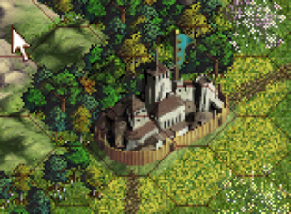

Trying to fit a square peg into a hex hole
Category: progress
Tags: old-blog
The align feature has been giving me quite some headache lately. For small objects it's easy, just fit them inside the nearest hex. It gets more interesting once your object spans over more than one hex. Here is a screenshot from the game "Age of Wonders" for PC (I upscaled the image manually, AoW has a very low resolution)

As you can see the city goes over two hexes and no matter which of the two I click, I always select the city. I tried many ways of calculating a reasonable way how to fit such an object into a hex grid, but no matter what I tried, it was bloated, had many cases and, worst of all, didn't really make any sense. The way Unity is designed is to work with rectangular objects which might be rotated. In a hex grid system everything is rotated, but only from our point of view, in terms of game logic everything is the normal way. This is what is causing problems, I'm trying to force one viewpoint into a different context.
So, what's the solution? I decided to go for the easiest and most intuitive approach: each object will be placed into the centre of its nearest hex. What about objects that need to go over two fields? In that case the user would have to set the pivot point manually, either in the 3D modelling application or in Unity by parenting the object to another object and placing them relative to each other so the pivot object is where you want the pivot point to be. In fact, this is exactly how the Age of Wonders editor is doing it.
You'll get a better idea of what I mean when you see it in action. In this video I'm assembling the structure directly inside the editor. Note that only the parent spheres have Rigidbodies, but all spheres have colliders and the script. Unity is designed in such a way that if an object has no rigidbody calling "rigidbody" will return the RB of its parent. Thus it's always as if I clicked the parent sphere when I click any sphere of a structure.
https://www.youtube.com/watch?v=JxnZxlfhu9g
I think this is a good solution. Unless I somehow come up with a better way to do aligning this is what I'm going to stick with.